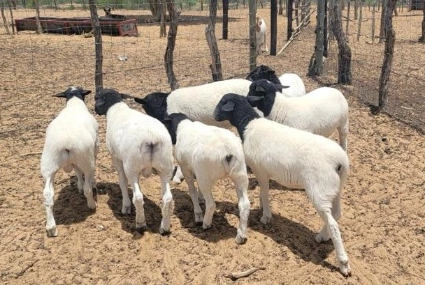

Welcome to Lexis Farming
Your source of fresh, organic produce from the heart of Botswana.
About US
Lexis Farming is a family-owned farm located in Kgalagadi area near Ditshegwane, dedicated to sustainable agriculture and producing high-quality crops. Our mission is to provide fresh, organic produce while preserving the environment for future generations.
We believe in the importance of community and strive to support local farmers and businesses. Our farm is committed to ethical practices, ensuring that our products are not only good for you but also good for the planet.
Join us in our journey towards a greener future. Whether you're looking for fresh produce, small stock, cattle, indigeneous chicken or want to learn more about sustainable farming, or simply wish to support local agriculture, Lexis Farming is here for you.